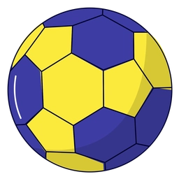

Evolução Histórica
Handebol de Quadra
Handebol no Brasil
Caça Palavras
Bem-vindo ao jogo de caça-palavras com temática de Handebol, se você prestou atenção no conteúdo das páginas, não terá dificuldades em encontrar as palavras.
Boa sorte!
Iniciar Jogo